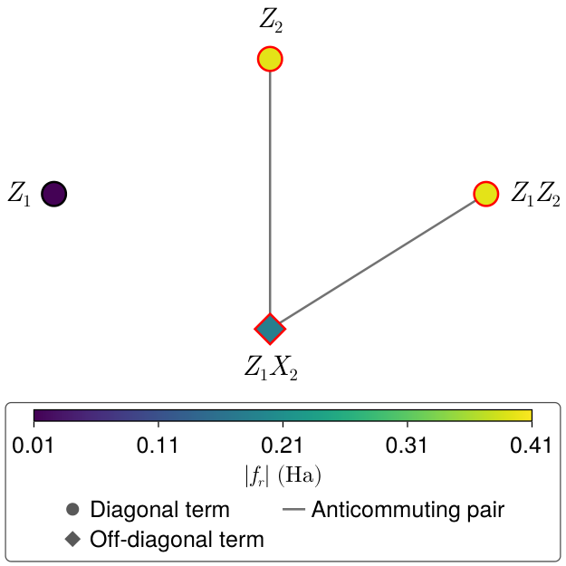
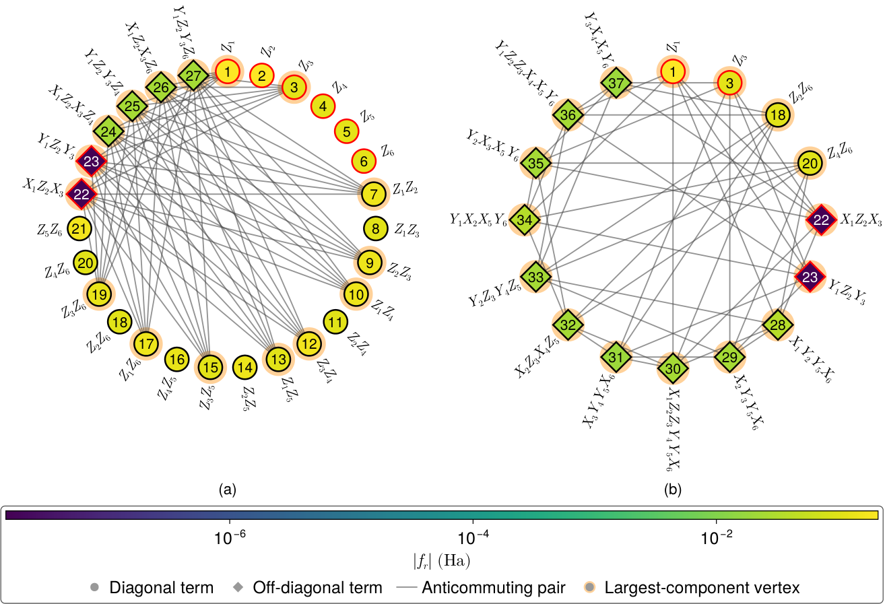

The two central theorems, that non-contextual Pauli Hamiltonians are free-fermion-disguised and induce fermionic encodings, are formalized in Lean with LLM-generated proofs released on GitHub.
Abstract
Decomposing Hamiltonians into classically tractable fragments is central to quantum simulation. One such way of doing so is the contextual subspace decomposition, which expresses the Hamiltonian with respect to non-contextual sets of Paulis. The conditions for contextuality rely on the anticommutation and commutation of Pauli operators; it is therefore natural to make an explicit connection between non-contextuality and fermionic physics. Theoretical work is centered around two theorems: in the first, we consider non-contextual Pauli Hamiltonians and show that they are free-fermion-disguised. In the second we write these Pauli non-contextual Hamiltonians in terms of Majorana and Dirac fermionic operators, showing that they carry a Jordan–Wigner-like fermion-to-qubit encoding. These two central theorems are formalized in the proof assistant language Lean. We use this to describe the space of fermionic non-contextual Hamiltonians, and highlight their relation to the more general class of free-fermion-disguised Hamiltonians. We further develop a heuristic algorithm to find line-graph based free-fermion fragments and their connected components of molecular Hamiltonians. We benchmark our algorithms against non-contextual searches for encoded molecular Hamiltonians and find comparable performance in identifying free-fermion solvable components. Our work has implications for what fragments to consider as useful for quantum simulation.
Problem
Decomposing Hamiltonians into classically tractable fragments is central to quantum simulation. The paper asks how non-contextual Pauli Hamiltonians, used in contextual subspace methods, relate to free-fermion-solvable Hamiltonians.
Approach
Two theorems are proved. The first shows that every non-contextual Pauli Hamiltonian is twin-free-fermion-disguised. The second rewrites such Hamiltonians in Majorana and Dirac fermion operators, showing they carry a Jordan–Wigner-like partial fermion-to-qubit encoding. Both theorems are formalized in Lean, with the code generated using Claude. A heuristic line-graph search algorithm is also developed to find free-fermion fragments and their connected components in molecular Hamiltonians.

Figure 6: The frustration graph of H 2 Hamiltonian discretized by STO-3G under the Bravyi–Kitaev encoding in the particle-number sector where the numbers of alpha-spin electrons and beta-spin electrons are both one (the identity term is omitted). This graph is a line graph with two connected components, where the non-isolated vertices (outlined in red) form an induced line graph of a path graph on
Results
Free-fermion-disguised Hamiltonians strictly contain the non-contextual Pauli Hamiltonians. Benchmarked on encoded molecular Hamiltonians, connected line-graph fragments are comparable in size to non-contextual fragments. They also carry better complexity-theoretic guarantees for ground-state solving and Hamiltonian simulation.

Figure 7: The comparison between two fragments selected from the Hamiltonian of H {}_{3}^{+} in the STO-3G basis under Jordan–Wigner transformation (six qubits; 51 terms excluding the identity term), each drawn as the frustration graph it induces. Circles are diagonal terms (Pauli operators containing I and Z only), diamonds are off-diagonal terms (containing X or Y ), a red outline marks the quad
Hamiltonian
E_min
Simulation (fixed small t)
Free-fermion (line graph)
P
poly(n)
Interacting fermion
QMA
poly(n,1/ε)
Non-contextual
NP
poly(n,1/ε)
Twin-free-fermion-disguised
NP
poly(n,1/ε)
Complexity of ground-state energy and Hamiltonian simulation by Hamiltonian family (subset of rows)